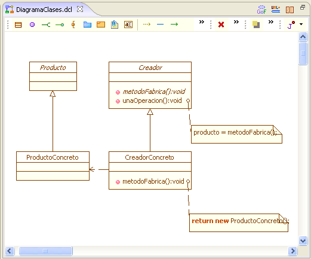

|
Framework UML |
|
El framework UML+ es una solución para realizar diagramas basados en la especificación de UML 2.0. Este Framework esta relacionado con FG, del cual toma la solución para la creación de diagramas basados en teoría de grafos y AIA, sobre el cual se presentan dichos diagramas.  Figura 1. Diagrama de clases en UML+ A este Framework se asocian los plugins para realizar diagramas de:
El framework brinda herramientas al marco de expresión con el fin de facilitar su uso para la creación de diagramas. Dichas herramientas están basadas en el paradigma de la mesa de diseño, en donde el artista se sienta a realizar bocetos y a realizar sus obras. |